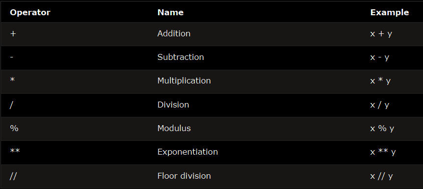

Operators are used to perform operations on variables and values.
Python divides the operators in the following groups:
- Arithmetic operators
- Assignment operators
- Comparison operators
- Logical operators
- Identity operators
- Membership operators
- Bitwise operators
Python Arithmetic Operators
Arithmetic operators are used with numeric values to perform common mathematical operations:

Python Assignment Operators
Assignment operators are used to assign values to variables:

Python Comparison Operators
Comparison operators are used to compare two values:

Python Identity Operators
Identity operators are used to compare the objects, not if they are equal, but if they are actually the same object, with the same memory location:

Python Membership Operators
Membership operators are used to test if a sequence is presented in an object:

Python Bitwise Operators
Bitwise operators are used to compare (binary) numbers:

Operator Precedence
Operator precedence describes the order in which operations are performed.
The precedence order is described in the table below, starting with the highest precedence at the top: